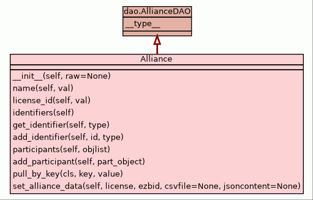

Class RetrievalRecord
source code

Class to allow us to record a retrieval of a file for the purposes of later reporting
DO NOT USE.
This class is not currently in use in the system, but may be activated later. In the mean time,
you should ignore it!
{
"id" : "<opaque id for repository config record>",
"created_date" : "<date this notification was received>",
"last_updated" : "<last modification time - required by storage layer>",
"repository" : "<user id of repository doing the retrieval>",
"notification" : "<id of the notification retrieved>",
"content" : "<the url or internal identifier of the content retrieved>",
"retrieval_date" : "<date the repository retrieved the record>",
"scope" : "<what the repository actually retrieved: notification, fulltext>"
}
|
|
__type__ = "retrieval"
The index type to use to store these objects
|